Nitrogen
Appearance: colorless gas, liquid or solid
Melting point (N2): 63.15 K (−210.00 °C)
Boiling point (N2): 77.355 K (−195.795 °C)
Nitrogen gas accounts for 78% of the total volume of the air while oxygen makes up 21%.
However, oxygen is about 10,000 times more abundant than nitrogen on Earth. Oxygen is a major component of the solid earth. Because nitrogen does not form a stable crystal lattice (regular repeated structure), it is rarely incorporated into minerals. Then unlike oxygen, nitrogen is very stable in the atmosphere and does not take part in many chemical reactions. As a result, nitrogen has built up in the atmosphere to a much greater extent than oxygen.
The extremely strong triple bond in elemental nitrogen (N≡N), the second strongest bond in any diatomic molecule after carbon monoxide (CO), dominates nitrogen chemistry. This causes difficulty for both organisms and industry in converting N2 into useful compounds, but at the same time means that burning, exploding, or decomposing nitrogen compounds to form nitrogen gas releases large amounts of often useful energy. The only major time it reacts is in the nitrogen cycle and that requires the actions of some specific bacteria bonding it with Hydrogen to make ammonia.
Nitrogen also forms several different oxides. Dinitrogen oxide N2O is an anesthetic called laughing gas. Nitrogen monoxide NO, and nitrogen dioxide, NO2, both form when combustion of hydrocarbons in air takes place under high pressure. These nitrogen oxides are produced in internal combustion engines. In the armosphere, tehse nitrogen oxides can form smog, a type of atmospheric haze produced by the action of sunlight with pollutants. two other compounds dinitrogen trioxide N2O3 and dinitrogen pentoxide N2O5, are unstable and explosive.
Nitric acid is a strong oxidant. For example, metallic copper does not react with hydrochloric acid, but does not react with hydrochloric acid, but does react with concentrated nitric acid. Copper metal is oxidezed to blue aqueous copper (II) ions and a red-brown gas (nitrogen dioxide) is produced.
Ammonium Chloride Molecule, NH4Cl
The ammonium Chloride molecule, NH4Cl, contains NH4+ and Cl iones. The Lewis structure for the nitrogen atom is N, for each hydrogen atom it is H. However, the NH4+ ion has one positive charge, which means that one of the nine electrons has been lost. Since all the hydrogen atoms in the ion are equivalent we give the nitrogen atom the positive charge, and write
Thus the correct Lewis structure of the NH4+ ion has four bonds and no unshared electrons. Notice that the ammonium ion is isoelectronic with methane. A formal charge +1 is assigned to the nitrogen atom. Now we assign the electron that was removed from NH4 to the chlorine atom, giving the ion-pair structure for the ammonium chloride molecule:
In short, the N-H bonds in NH4+ are covalent with some ionic character, whereas the NH4+ ion is attached to Cl- by an ionic bond.
Haber-Bosch
Though the reduction of N2 to NH3 is exergonic (ΔG° = −33.5 kJ/mol) nitrogen is chemically quite inert due to a bing energy of the triple bond N≡N of 942 kj/mol because of which the N2-reduction has to surmount a high activation energy. The well-known Haber-Bosh process is a heterogeneous catalytic cycle for industrial production of NH3 uses Fe/Ni catalysts, needs temperature between 400 to 500°C and a pressure of several ten thousands KPa.
I composti contenenti azoto sono molto importanti per la produzione di azoto ed esplosivi. All'inizio del '900, le sorgenti principali di fertilizzanti erano il nitrato di sodio e di potassio estratti da depositi nel suolo.
Il processo Haber-Bosch, noto anche semplicemente come processo Haber, è un metodo che permette la sintesi industriale dell'ammoniaca su larga scala utilizzando come reagenti azoto e idrogeno in presenza di un catalizzatore eterogeneo a base di ferro. Prima dello sviluppo di tale processo la sintesi dell'ammoniaca risultava difficoltosa.
Azoto e idrogeno reagiscono in rapporto 1:3, secondo l'equilibrio:
N2(g) + 3 H2(g) ⇄ 2 NH3(g) ΔH° = –92 kJ/mol
Il maggior problema legato alla sintesi dell'ammoniaca è rappresentato dalla difficoltà nello scindere il triplo legame che tiene uniti i due atomi di azoto in N2. Se incrementiamo la temperatura del sistema all’equilibrio, dato che la reazione di formazione dell'ammoniaca è esotermica (ΔH° = –92 kJ/mol), la posizione dell’equilibrio si sposterà in modo da diminuire la temperatura, quindi a sinistra, in modo da assorbire calore e contrastare l'incremento di temperatura, come previsto dal Principio di Le Chatelier. Aumentando la temperatura otteniamo quindi meno ammoniaca. Ci sono anche considerazioni di tipo cinetico da fare; Se diminuiamo la temperatura per aumentare la resa della reazione, questa procederà più lentamente, quindi per ottenere ammoniaca velocemente c'è bisogno di alte temperature.
Sempre secondo il Principio di Le Chatelier, se aumentiamo la pressione del sistema all’equilibrio, il sistema reagirà in modo da diminuire la pressione. Questo significa che si sposterà a destra poichè c’è meno gas, dunque una pressione inferiore. Un incremento di pressione porta a una resa maggiore di ammoniaca.
La scoperta e il successivo perfezionamento del sistema catalitico adoperato da Fritz Haber e Carl Bosch, nel 1912, ha permesso di poter utilizzare temperature di esercizio sensibilmente minori. Siccome non si può aumentare la temperatura più di tanto, un modo per accelerare la reazione è di utilizzare dei catalizzatori come la miscela Fe3O4, KOH, SiO2 e Al2O3, siccome il catalizzatore non è efficace al di sotto dei 400 °C, l'optimum di temperatura si aggira intorno ai 450 °C e pressioni comprese tra 15–25 MPa.
L'ammoniaca viene continuamente liquefatta e rimossa per spostare l'equilibrio verso la sua produzione.
I processi di catalisi, prevedono l'adsorbimento delle specie sulla superficie, e possono essere così riassunti:
N2(g) ⇄ 2 Nads
H2(g) ⇄ 2 Hads
Nads + Hads ⇄ NHads
NHads + Hads ⇄ NH2 ads
NH2 ads + Hads ⇄ NH3ads
NH3 ads ⇄ NH3 (g)